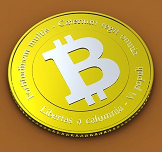

비트코인은 가상화폐이자, 이 화폐가 작동하는 방식을 말한다. 쉽게 말해 싸이월드 ‘도토리’나, ‘네이버 캐쉬’와 같이 실제 돈은 아니지만 물건을 사거나 서비스 이용료를 결제할 수 있는 돈이다. 그렇다고 우리가 쓰는 돈처럼 손에 쥘 수 있는 물건은 아니다. 지금 이 글처럼 온라인에서 떠도는 코드일 뿐이다. 비트코인은 발행 주체가 없는 가상화폐다
사실 가상화폐는 흔하다. 인터넷 서비스마다 자기만의 가상화폐를 만들곤 한다. 싸이월드는 ‘도토리’를 만들었고, 네이버는 ‘네이버 캐쉬’, 페이스북은 ‘페이스북 크레딧’, 카카오는 ‘초코’이라는 가상화폐를 만들었다. 그 외에도 자기 서비스 이름 뒤에 ‘캐시’라는 이름을 붙인 가상화폐를 만든 곳은 많이 있다. 이렇게 가상화폐가 많은데도 비트코인이 특별히 주목을 받은 건, 작동 방식이 특이하기 때문이다.
비트코인은 주인이 없다. 특정 개인이나 회사가 운영하는 ‘캐시’가 아니다. 작동하는 시스템은 P2P 방식으로, 여러 이용자의 컴퓨터에 분산돼 있다. 비트코인을 만들고 거래하고 비트코인을 현금으로 바꾸는 사람 모두가 비트코인 발행주다. 그 중 누구 한 사람을 콕 집어서 ‘이 사람이 주인‘이라고 말할 수 없다.
비트코인용 계좌를 만들 때도 신분증 검사 같은 건 필요 없다. 비트코인에서는 계좌를 ‘지갑’이라고 부른다. 지갑마다 고유한 번호가 있는데 숫자와 영어 알파벳 소문자, 대문자를 조합해 약 30자 정도로 이루어진다. 한 사람이 지갑을 여러 개 만들 수 있는데, 개수에 제한은 없다. 다만 지갑을 만들 수 있는 별도 프로그램이나 웹사이트를 써야 한다.
